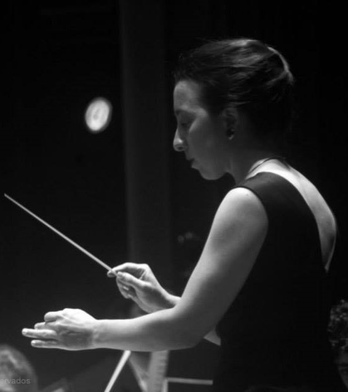
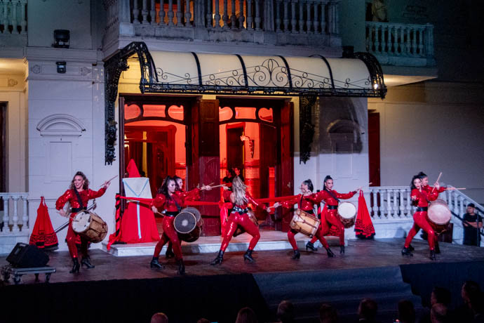
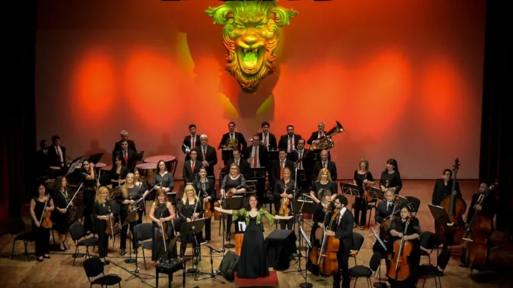
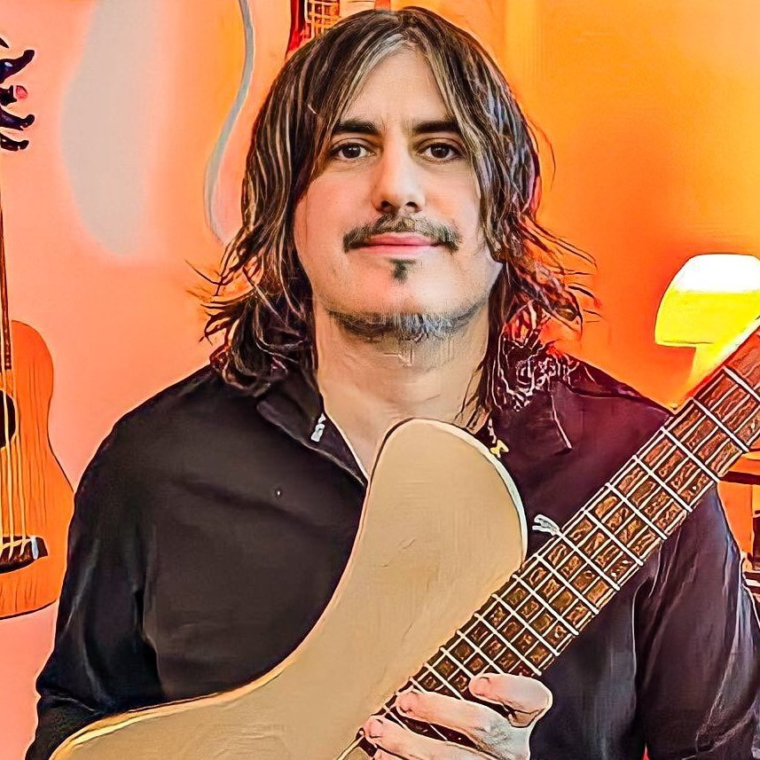
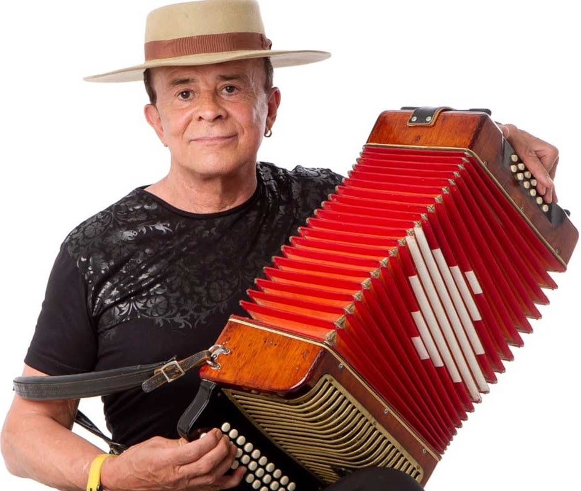
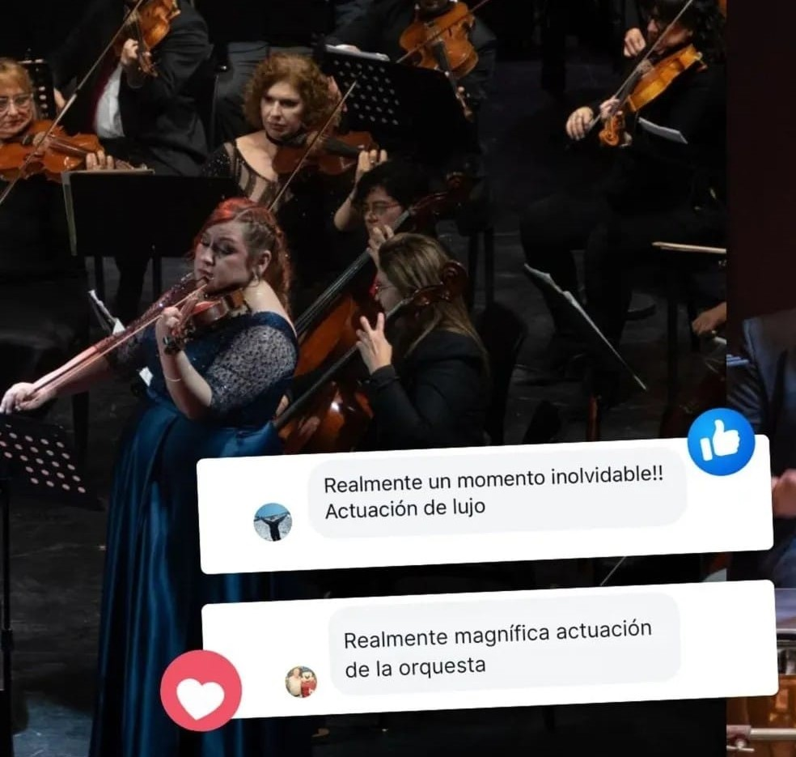
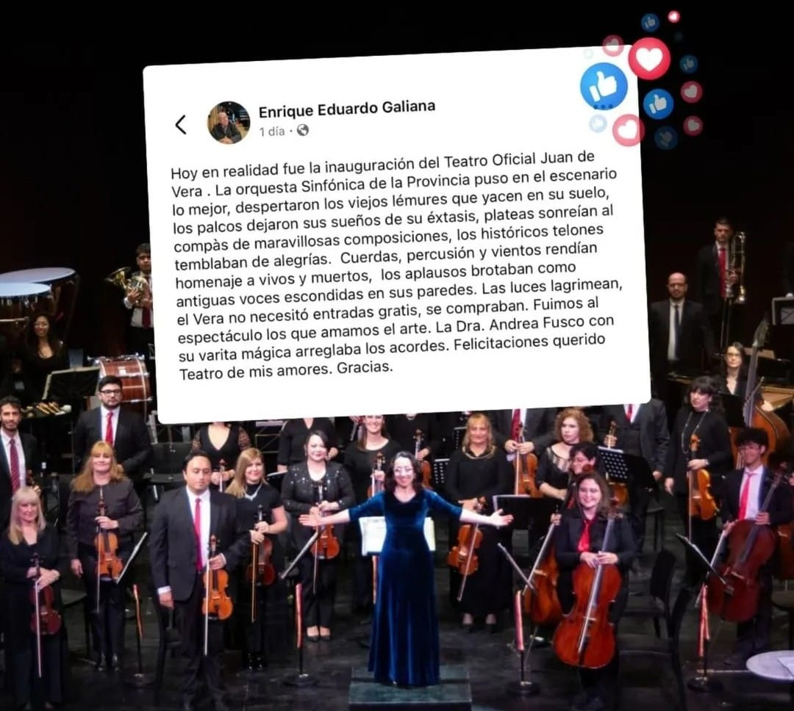
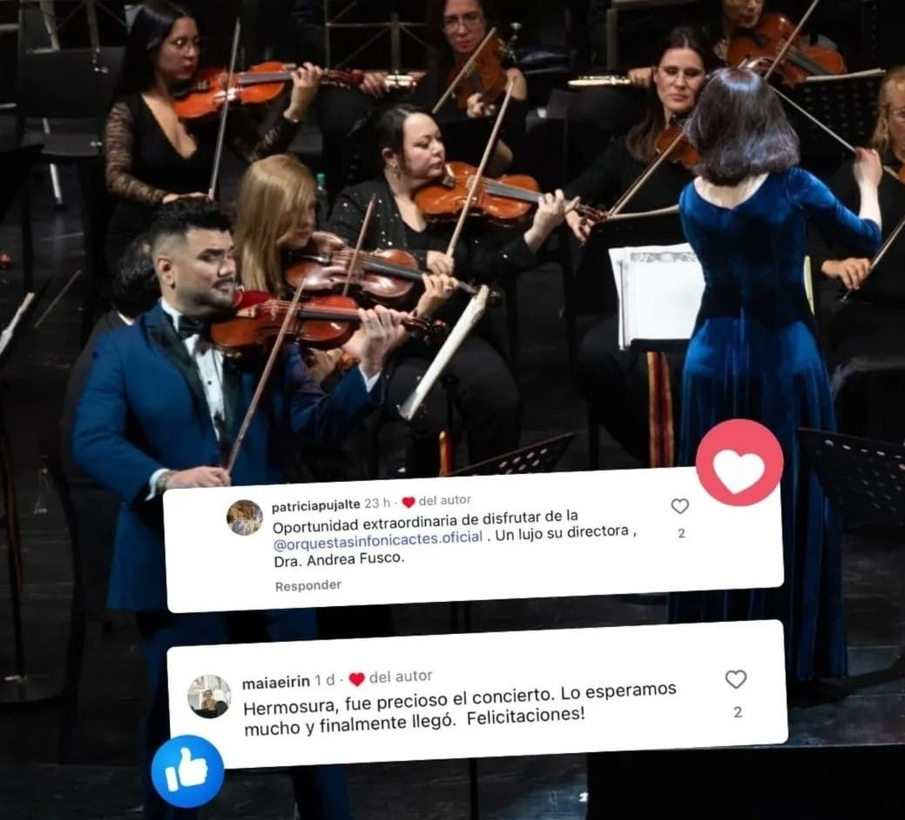
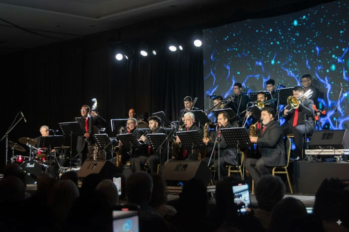

Biografía
Conoce la trayectoria profesional y académica de la Dra. Andrea Fusco

Mtra. Andrea Fusco
Nacida en Corrientes, Argentina, Andrea Fusco es una destacada figura del ambiente artístico. Doctora en Artes por la Universidad Nacional de Córdoba, obtuvo previamente los títulos de Profesora y Licenciada en Música con especialidad en Dirección Orquestal y Coral en la Universidad Nacional del Litoral. Su pasión por la música y su sensibilidad artística la han llevado a consolidarse como directora de orquesta y coro, docente e intérprete de gran versatilidad.
Formación y Perfeccionamiento Internacional
Su trayectoria académica se enriqueció con estudios junto a reconocidos maestros como Zemba y Thüring Bräm. En 2001, fue becada por la Embajada de Suiza y la Fundación El Sonido y el Tiempo para perfeccionarse en Dirección Orquestal en Lucerna, bajo la guía del maestro Bräm. Posteriormente, participó en los Festivales de Verano de la Accademia Musicale Chigiana en Siena (Italia), trabajando con el célebre Gianluigi Gelmetti. En 2006, obtuvo una beca de la Secretaría de Cultura de la Nación para continuar su perfeccionamiento en Suiza y Eslovaquia, y al año siguiente alcanzó el Tercer Premio en el Concurso Internacional Simón Blech, donde ya había sido semifinalista en 2006.
Trayectoria Profesional
Trabajó como Directora Invitada junto a Orquestas Sinfónicas de las Provincias de Corrientes, Chaco, Entre Ríos, Tucumán, como así también con las orquestas sinfónicas de Bahía Blanca y Tres de Febrero (Bs. As.), además de su trabajo internacional junto a la Orquesta Sinfónica de Aguascalientes (México) y la Orquesta Sinfónica de Ruse (Bulgaria), esta última con la guía del Mtro. Jorma Panula en septiembre de 2010. Fue docente y Directora de la Orquesta Juvenil del Instituto de Música "Carmelo De Biasi". En 2008 fue docente en la Cátedra de Dirección Orquestal de la Universidad Nacional del Litoral (Santa Fe), contribuyendo a la formación de jóvenes músicos. En el año 2022 ha sido nominada por Corrientes para el Premio Nacional Clásica en la categoría de Directora Destacada.
Producciones Líricas
- 2013: Il Pagliacci – R. Leoncavallo
- 2013-2014: Hansel y Gretel – E. Humperdinck
- 2018: Il Trovatore – G. Verdi
- 2019: Cavalleria Rusticana – P. Mascagni
- 2023: Aida – G. Verdi
Colaboraciones y Reconocimientos
Ha trabajado junto a destacados solistas internacionales como Luis Ascott, Mirian Conti y José Luis Juri (Piano), Oleg Pishenin y Natasha Shismónina (violín), Manuel Núñez Camelino (Tenor), Osvaldo Burgos (Stick), Aníbal Borzone (Marimba), Leonardo López Linares (barítono) Darío Volonté (tenor), Lito Vitale Quinteto, Mateo Villalba, Verónica Cangemi (Soprano), Patricia Sosa, Raul Lavié, Chango Spasiuk, Antonio Tarrago Ros, entre otros.
Doctora en Artes
Formación académica superior Universidad Nacional de Cordoba
Proyección Internacional
Experiencia y formación en el exterior
20+ Años
Experiencia profesional, docencia y dirección
Reconocimientos
Premio en el Concurso Internacional Simón Blech
Novedades
En esta sección podrás encontrar las últimas novedades y presentaciones artísticas de Andrea.

“Renace” dejó abiertas las puertas del Teatro Oficial Juan de Vera
Un rol preponderante tuvo la Orquesta Sinfónica de la Provincia de Corrientes bajo dirección de la Maestra Andrea Fusco...
Ver más detalles →
"Los viajes del joven Werther"
Concierto sinfónico interpretado por la Orquesta Sinfónica de la Provincia de Corrientes el día 6 de septiembre de 2025...
Ver más detalles →
Patricia Sosa presentó "Alquimia" en el Teatro Vera a sala llena
El pasado 12 de Septiembre, la Orquesta Sinfónica de Corrientes fue la invitada de lujo a este espectáculo...
Ver más detalles →
Otra presentación destacada
Texto resumido de la noticia o evento para la vista previa...
Ver más detalles →Reseñas y Opiniones
"... Tuve el privilegio de tocar con la ORQUESTA SINFÓNICA DE CORRIENTES, dirigida por la talentosa Andrea Fusco @andreafusco_ok. Fue una noche espectacular, inolvidabl!!! ..."
📅 13/10/2025

Patricia Sosa
Cantante, compositora y actriz
"Demasiado emocionante como para explicarlo con palabras! Anoche en el increíble Teatro Vera de Corrientes, repleto! junto a la Orquesta Sinfónica de Corrienes, se inició una nueva etapa del Lito Vitale Quinteto celebrando los 30 años del disco Ese Amigo Del Alma.".
📅 8/4/2018

Juan Pablo Rufino
Bajista-Compositor-Productor en RUFA
Bajista de Lito Vitale
"En mi camino artístico me crucé con seres que transformaron mi mirada del arte, del trabajo escénico y de mi propia labor. Conservo recuerdos entrañables, imágenes, poemas y sobre todo, mucha música. Hoy comparto algunos de esos tesoros."
(Agosto 2025)
Andrea, mi directora,
Con Sinfónica Orquesta,
Siempre vale lo que cuesta,
Es un nacer cada aurora.
Tu república sonora
Me tiene el alma volando,
Hasta despierto soñando,
Chamamé bien tacurú,
Regresando a Curuzú,
Con el corazón cantando.
Andrea Fusco directora,
De la cabeza al talón
Te abraza mi corazón.
De la Orquesta sos la aurora,
Con tu batuta ríe, llora,
Y si me dirigís vos,
Voy de la perfección en pos,
Con la Sinfónica soñando,
Y la elección celebrando,
Te abraza un Tarragó Ros.
— Aprendiz de Payador

Antonio Tarragó Ros
Músico: acordeonista, autor y compositor



Próximos Eventos
No te pierdas las próximas presentaciones y actividades de la Mtra. Andrea Fusco

NOCHE DE SWING
Orquesta Sinfónica de Corrientes - Jazz Big Band.
Más Información
Masterclass de Dirección Coral
Taller intensivo para jóvenes directores corales con prácticas en vivo.
Más Información
Festival de Música Coral
Encuentro coral internacional con agrupaciones de Europa y América Latina.
Más Información"Las obras de arte son vestigios que adquieren vida cada vez que el artista la interpreta. Cada interpretación es un momento único e irrepetible."
- Andrea Fusco -